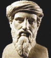

-
Cuántos caminos solo, oh alma mía,
solo y tal vez peor;
cuántas cuestas que hacer a pie sin guía
y cuánta fruta moridera en flor. ...
Me dicen que en las próximas semanas está por salir publicada la biografía de Castellani, de S. Randle, que se hizo esperar muchos años.
Debe ser interesante....
aunque me dicen que sólo abarca hasta el año 1949
o algo así. Veremos...
« [...] no sólo fue un hombre auténticamente sabio, sino que logró difundir esclarecimiento donde realmente importa: entre los hombres y mujeres de negocios, los poderosos e influyentes. [...]»
La frase es de Paul Johnson; la acabo de leer en un página de "Al diablo con Picasso" (una recopilación de artículos periodísticos; mediocre a mi ver). El artículo alude a Popper, a quien encomia, enfrentándolo con los filósofos de siglo XX; (y tras explicarnos por qué Popper es un sabio -no digo que sí ni que no- Johnson termina el artículo mencionando al pasar las alabanzas que aquel le dedicó a uno de sus libros...)
La frase aquella... suena horrible. Puesta en su contexto y mirada con buenos ojos, tal vez que puede defenderse. Pero la verdad es que no me dan ganas.
Y ya que hablábamos de "vida prenatal", enganchamos con dos pedidos de oraciones en "St. Blog".
Cristiano que pasas por acá, estás invitado a rezar por Mrs. Kairos Guy que está entrando en los últimos meses de un embarazo que "continúa" un embarazo anterior reciente fallido (perdió el bebé ...). Y por la amiga de Spaki (17 años) que estaba planeando abortar en estos días.
Y respecto de lo que decíamos sobre el perdón, eduardo me comenta varias cosillas:
-
«... interesante es que, en varias lenguas antiguas, la palabra perdón se asocia a olvido (intencional por cierto, no por distracción)
en hebreo, según me dicen, la palabra que se usa significa 'soltar', 'dejar ir'.
En latín se usan varias, y muchas tienen un dejo similar:
ignosco por ejemplo (de raíz gn-conocer, como 'ignorar'),
quiere decir perdonar, no tomar en cuenta, hacer la vista gorda, dejar
pasar.
Lo mismo con oblivio (un substantivo, de donde viene nuestro 'olvido'. el verbo
es
obliviscor).
Y hay otras interesantes etimologías, que muestran la noción clara de que
el rencor es enfermizo y el perdón sanante.
Y por aquello de que nadie da lo que no tiene,
conviene tener cierta paz, cierta salud, cierta alegría, cierta
benevolencia, para darla a otros.
De allí que diga el Poema:
"saber olvidar lo malo/también es tener memoria", y de allí entonces que haya
salud de todo tipo en el perdón: psíquica y espiritual. hasta social, por
consecuencia.
Respecto del supuesto egoísmo de perdonar buscando la salud propia, curiosamente, es al revés: el no perdonar me mantiene en el centro de la escena todo el tiempo, como acreedor irreductible de la herida que el otro me ha provocado, o creo que me ha provocado, y que ata al otro a mi persona hasta que lo suelte (si lo suelto, es decir si lo perdono y lo dejo ir).
Dejándolo ir, olvidando la ofensa, soltándolo, en suma perdonando, salgo del
centro del escenario como actor principal de esa tragedia
moral.
Por otra parte, la idea de que ofenderse (herirse o sentirse herido) embalsa el
mal parece
acertada.
Mi herida en carne viva se infecta en el rencor e infecta lo que toca, extiende el mal y, tal como hace un dique (que sería el rencor), si el mal fuera agua subiría su nivel hasta desbordarse en toda cosa.
Otra vez: dejarlo pasar, omitir, remitir la ofensa (y la sensación de herida), ayuda a hacer inocuo el mal.»
Respecto de lo anterior,mi tocayo me dice:
-
«
Como neurologo infantil trato a diario con situaciones muy dramaticas de
discapacidad y muerte temprana.
Hace 2 años fui consultado off-the-record por el Juzgado interviniente sobre el famoso caso de la madre que queria abortar a su niño anencefálico. En aquel momento, antes de mi conversion y muy influido por el pensamiento humanista-progresista-ateo que domina la ciencia y la cultura de hoy, relativicé mi opinión de especialista.
A la semana de haber emitido aquella opinion, fui dulcemente aleccionado: tuve
que atender en el Hospital público de Monte Grande un recién nacido
hidranencefálico (en vez de cerebro tiene agua y rudimentos de tejido nervioso)
que sobrevivió varias semanas tras el nacimiento.
Pude comprobar, sentir,
percibir con total claridad, a pesar de mi coraza cientificista, que ese bebé
estaba muy vivo, que era un alma que podéa transmitir amor, que su llegada al
mundo había generado en aquella paupérrima familia
de madre adolescente y padre convicto un inexorable vuelco de corazón.
Ese niño nunca llegó a la escuela pero
en sus pocas semanas de vida su manito tibia tocó la piel de su mamá y la cambió para siempre.
Ese bebe nunca supo hablar pero toda esa familia se unió en una
fecunda muestra de amor.
Ese niño, que nació en la miseria sin haber tenido la
suerte o desgracia de ser observado por una ecografía previa al nacimiento,
vivió, amó y dejo huella en la tierra.
¿Que es mi inteligencia al lado de Dios? Nada. Somos poco
menos que profundos retardados mentales ante el Absoluto y su misterio
¿merecemos acaso morir a manos de otros por esta discapacidad intelectual?
Si las capacidades neurológicas son las que cuentan ¿por que no salimos a matar a todos los chicos Down ya mismo entonces? ¿por que tanta hipocresía? ¿Cuáles son las capacidades humanas que valoramos y cuáles las que desestimamos y con qué
parámetro?
Si lo que queremos, en nombre de la salud y el progreso, es
la perfección humana a la manera que el hombre lo concibe, quitémosnos la careta y no hablemos más de derechos
humanos.
...»
En relación al aborto provocado por causa de anencefalia (patología grave), dice la doctora Mabel Bianco, presidenta de la Fundación para el Estudio y la Investigación de la Mujer:
- "
No se puede obligar a una pareja a continuar con un embarazo cuando la mujer sabe que lo que lleva en su vientre no acabará en una nueva vida"
Los obispos argentinos, esta vez, han tomado posición; y sin medias tintas.
Lástima la estupidez
del título políticamente correcto
que le pusieron en la agencia oficial, ("
El Arzobispado se opone a un proyecto que discrimina a los enfermos
"); pero podemos esperar que eso no sea culpa episcopal.

Los griegos del siglo 5AC inventaron la palabra "filosofía".
Los periodistas del siglo 20DC, agradecidos.
(más ejemplos)
Tom de Disputations responde -con la solvencia habitual- a la semi-objeción...
Por un lado:
"Objectively, following the evangelical counsels is a higher state in life than not following them" . Es decir, el estado de vida religioso está
-objetivamente, en lo absoluto- jerárquicamente por encima del
estado de vida laico. (más o menos lo mismo podría decirse
de la virginidad -religiosa- frente al matrimonio, de la vida contemplativa
frente a la activa, etc... digo yo).
Por otro lado, cada cual debe seguir su vocación, cada cual debe
responder a la Gracia que Dios da...
"while one state may be objectively higher, following it may be subjectively worse. It is better for me to respond to God's grace as best I can as a married man than to presume graces God doesn't intend for me as a friar.".
Nihil Obstat.
Urs von Balthasar lo ponía (a propósito de Santa Teresita) en términos
de misión. Dios tiene una misión para cada hombre.
Hay misiones más altas que otras. Pero, dado que toda misión
involucra una participación en la vida de Dios, absolutamente
nadie puede quejarse de que su misión es demasiado baja.
Por más chiquita que sea tu misión, si la siguieras a la perfección
serías un santo más grande que San Francisco. Seguramente,
dice UvB, María es la única que la cumplió plenamente, en
la perfecta docilidad.
Conocí en estos días -vía el blog- a un converso reciente, treintañero, que está ahora asistiendo a un curso de catequesis de adultos en una parroquia de Buenos Aires para entrar en la Iglesia y recibir los sacramentos (no está bautizado). Dura prueba, es de imaginar ... que el hombre se toma con mucha paciencia cristiana, y la justa cuota de humor.
Me quedó dando vueltas la imagen de uno de sus compañeros catecúmenos, que -me contaba- se resistía a aceptar la necesidad del perdón:
-"Por qué ? Por qué si el otro me hizo mal y no se arrepiente, y no se disculpa... por qué lo voy a tener que perdonar ? Eh ?? ... No, yo no lo perdono nada! ".
Se me ocurre que esa cuestión tiene más miga
de lo que parece.
Porque ... después me acordé de un caso similar, que me contó un
profesor de secundario, en un colegio católico. Uno de sus alumnos
adolescentes, que asistía con ostensible escepticismo a una charla
de moral cristiana (o algo así), hacía la misma pregunta
(con más incredulidad y más soberbia juvenil, es de creer):
"Perdonar? Por qué?".
Mi amigo profesor quedó -junto con algún regusto amargo-
masticando alguna respuesta
en un plano más elemental que el de la moral cristiana:
en un plano de mera salud espiritual, digamos; o, por qué no: salud psíquica.
Uno debería poder ver -y hacer ver- que perdonar las ofensas
no sólo es hacer un bien al ofensor: también
(acaso en primer lugar) beneficia al que perdona.
Algún cristiano se sentirá incómodo con este tipo de justificación.
No, -dirá- eso es "interesado" y la moral cristiana es desinteresada.
No se trata de hacer el bien porque eso "me conviene"; buscar
el beneficio propio está en las antípodas del evangelio.
Sí, pero ... no confundamos los planos ni nos aferremos a uno.
Por un lado, el cristianismo no viene a destruir la moral
natural, sino a perfeccionarla. Uno puede caer en visiones
demasiado "elevadas" del asunto; es como -en el orden
del conocimiento de Dios- el fideísmo: concepción herética
que termina despreciando a nustra inteligencia natural,
cuando al fin y al cabo ella también -con sus limitaciones-
está ordenada a Dios. Y así uno todos los días uno debería
repetirse: "ni yanquis ni mar..." digo...
"ni racionalistas ni fideístas" (no me voy a salvar
por la sola razón, pero tampoco me voy a salvar sin ella),
de parecido modo -pienso yo, no sé...- no me voy a salvar
buscando mi provecho, pero tampoco me voy a salvar si
no ansío el Bien (y la búsqueda del Bien en general no puede
dejar de estar integrada a la búsqueda del "Bien para mí").
De otra manera, pecaría de interesado el mismo Jesús cuando
nos incita a hacer el Bien poniendo a la vista la recompensa,
(que no sólo es "ultra terrena"), las mismas bienaventuranzas, etc.
Y nos enredaríamos en la vieja objeción de si buscar
la bienaventuranza ("santificarse", "ir al cielo", "ver a Dios";
salvarse, en suma) no es una forma de egoísmo.
Pero buscar "bien" el bien propio, es buscar el Bien.
Y Dios es el Bien, y a eso estamos ordenados.
Volviendo al caso particular, quedaría por ver
si verdaderamente perdonar hace bien al que perdona,
y si esto podría bastar para justificar la necesidad
de perdonar. Se me hace que sí... al menos para empezar.
Se podría ver la cosa por el lado "meramente" psíquico;
se podría contemplar el perdón como una especie de purga,
una extirpación de rencores y resentimientos
que intoxican y atrofian la vida espiritual.
Se podría
mirar por el lado social, (incluso por el lado "económico":
el perdón como una "quita de una deuda", necesaria para
el funcionamiento de la misma vida económica y, de última, beneficiosa
para el mismo acreedor).
Y, más alto, la mirada cósmica
(religiosa, en el sentido "natural" de la palabra) que
entiende que hacer el Bien (no con relación a otro o a uno;
a secas) infaliblemente "hace bien".
Y por qué perdonar, a secas, es hacer el Bien ?
Porque es borrar el Mal. Porque, dicho religiosamente, a lo Kiekergaard,
el perdón (el perdón de Dios, en primer lugar, sí; pero
también el perdón del hombre) elimina ( fagocita, desaloja) el pecado.
Y no perdonarlo, de alguna manera aumenta ese 'stock de Mal'
que al fin y al cabo es patrimonio común. Negarse a perdonar,
en ese sentido, es resistirse a olvidar , a
borrar el mal (ajeno... ajeno ?); y estar apegado al mal
(ajeno; ajeno?) es de los apegos más venenosos que podemos tener.
"Ni olvido ni perdón" dicen algunos. Por los frutos
se conocen.
-
... el perdón elimina el pecado perdonado.
Este es un pensamiento maravilloso, y por lo mismo también es un pensamiento de la
fe; ya que la fe siempre está relacionada con aquello que no se ve. Yo creo que lo
visible se deriva de lo invisible; yo veo el mundo, pero lo invisible no lo veo, lo
creo. De esta manera entre "perdón" y "pecado" intercede
una relación de fe,
relación que apenas suele considerarse.
¿Cuál es aquí y en definitiva lo invisible?
Lo invisible en este caso consiste en que el perdón desaloja lo que a pesar de todo
existe; lo invisible consiste en que lo que se ve, no obstante no se ve; puesto que
viéndolo, resulta de todo punto invisible el hecho de que no se vea.
El que ama ve el pecado que perdona, pero cree que el perdón lo hace desaparecer.
Esto en realidad no puede verse, ya que lo que puede verse es el pecado; y además,
si no se viese el pecado, ¿cómo seria posible perdonarlo?
Por eso de la misma
manera que la fe convierte en cierto sentido lo invisible en visible, así, también,
aunque en sentido contrario, el que ama cree que con el perdón desaparece lo
visible. Las dos cosas son objeto de la fe. ¡Bienaventurado el que cree, porque
cree lo que no puede ver! Y ¡bienaventurado el que ama, porque cree desaparecido lo
que a pesar de todo podría verse!
¿Quién es capaz de creer esto? El que ama es capaz de creerlo.
Entonces ¿por qué es tan raro el perdón?
¿Acaso no se debe a que la fe que acompaña el perdón es tan débil
y tan rara? Incluso los hombres bastante buenos, nada inclinados por su naturaleza
al rencor o al odio, ni mucho menos pertenecientes a esa especie no infrecuente de
hombres irreconciliables, suelen, sin embargo, exclamar: « Le perdonaría de mil
amores, pero no veo que ello sirva de nada! »
Claro que esto último tampoco es una cosa que se vea!
Pero si alguna vez has tenido necesidad de que alguien te
perdonara, entonces no ignoras de cuántas cosas es capaz el perdón.
¿Por qué te
empeñas en hablar acerca del perdón de una manera tan superficial y tan
poco caritativa ?
Porque no cabe duda que encierra mucho desamor esa frase:
«No veo de qué le pueda servir mi perdón!»
[...]
Ha quedado borrado, ha quedado perdonado y olvidado, O como dice la Sagrada
Escritura acerca de lo que Dios perdona: ha quedado escondido a sus espaldas. El
que haya sido olvidado no significa, evidentemente, el que se lo ignore; pues lo
que se ignora ni se sabe ni se ha sabido nunca. En cambio, lo que se ha olvidado,
se supo alguna vez. Por esta razón, olvidar en este sentido subliime no es
precisamente lo contrario del recuerdo, sino de la esperanza. Ya que esperando doy
existencia con mi pensamiento a una cosa que todavía no existe; por el contrario,
olvidando quito con mi pensamiento la existencia a lo que a pesar de todo existe,
es decir, que lo elimino.
La Escritura enseña que la fe se orienta hacia lo
invisible, pero también enseña a la par que la fe es la firme seguridad de lo que
esperamos; lo que implica que lo esperado sea semejante a lo invisible, ya que no
existe de suyo, sino que recibe su existencia de la esperanza que lo piensa. El
hecho de que Dios perdone los pecados es la antítesis de su creación; porque al
crear, Dios está sacando algo de la nada, mientras que perdonando arroja de nuevo
algo a la nada. Lo que está oculto a mis ojos, no lo he visto nunca; pero lo que
está escondido a mis espaldas, lo he podido ver y lo he visto alguna vez.
Cabalmente ésta es la manera que tiene el amoroso de perdonar: el amoroso perdona,
olvida y borra el pecado, y así se vuelve amorosamente hacia aquel a quien acaba de
perdonar; mas una vez que se ha vuelto hacia él, ya no puede, indudablemente, estar
viendo lo que queda a la espalda. No es preciso ser un superdotado para comprender
que es imposible ver lo que uno tiene a la espalda, al mismo tiempo que es
igualmente fácil de comprender con qué admirable acierto ha sabido el amor dar con
esta expresión. En cambio, ¡eso sí! es dificilísimo en la mayoría de los casos el
hacerse uno mismo caritativo, de manera que gracias al perdón eche a sus espaldas las culpas del otro. A los hombres les resulta mucho más fácil por lo común cargar
cualquier culpa, aunque se trate de un asesinato, sobre la conciencia de otros
hombres. ¡ Cualquier cosa antes que perdonar, y así tener que cargar uno mismo
sobre sus espaldas con las culpas de otro! La excepción es el que ama, ya que este
oculta la muchedumbre de los pecados.
Y no me digas que "la muchedumbre de los pecados siempre permanecerá la misma, perdónense o no se perdonen, puesto que el perdón ni quita ni pone". Preferirla que me respondieses a la siguiente pregunta: ¿Acaso no acrecienta la multitud de los pecados el que falto de amor deniega el perdón? Y además, ¿no es la irreconciliación un pecado más, y de tal naturaleza que todo el mundo lo debiera tomar en cuenta?
Sin embargo, no nos toca ahora destacar este punto, sino que en la
misma línea del discurso seguimos preguntando: ¿Acaso no existe una relación
misteriosa entre el pecado y el perdón? Cuando un pecado no está perdonado,
entonces está reclamando un castigo, ya delante de los hombres, ya delante de Dios.
Ahora bien, cuando un pecado reclama castigo, entonces aparece completamente
distinto, enormemente mayor que cuando el mismo pecado está perdonado.
¿Será todo
esto una mera apariencia?
De ninguna manera, se trata de una
realidad. Y
así, para emplear un símil imperfecto, no es ninguna mera apariencia la que hace
que una herida se nos presente en un momento como algo horrible, y en cambio en el
momento siguiente, después que el médico la ha lavado y curado, la veamos mucho
menos horrible, por más que se trate de la misma herida.
Por tanto ¿qué es lo que
hace el que deniega el perdón a otro? Aumenta el pecado, hace que éste aparezca
mucho mayor. Por eso el perdón consume al pecado,
y la negación del perdón lo alimenta.
Podemos afirmar, entonces, que aunque no ocurriera ningún nuevo
pecado, con todo y permaneciendo los que ya había, se iría aumentando por ese camino
la multitud de los pecados.
Siempre que un pecado permanece, hay otro nuevo en
realidad que se le suma, ya que el pecado crece con el pecado.
El hecho de que un
pecado permanezca constituye un nuevo pecado. ¡Ay, y este nuevo pecado estuvo en tu
mano el evitarlo, con sólo que perdonando amorosamente hubieses eliminado el pecado
antiguo! Esto es lo que hace el que ama, que cubre la muchedumbre de los pecados.
...
Soren Kierkegaard
Las obras del amor
PD: Mi tocayo me hace notar, coincidencia notable, que el evangelio de hoy tiene algo que decir al respecto.
Y Alejandro comenta lo suyo en su blog.
En febrero me tomé unas vacaciones tranquilas y solitarias; la cosa era salir de Buenos Aires, buscar mejores aires, acompañado sólo de libros (Santa Teresita, sobre todo); hacer una especie de retiro -con poca disciplina y poca ascesis, eso sí-.
Un detalle que se me escapó de mis previsiones: todos los hoteles tienen un televisor en el cuarto (y en los comedores, las terminales de transporte... tengo miedo de algún día visitar la celda de un monje trapense y encontrarme con que ellos también tienen).
Bueno, una de las cosas que me llamó la atención es el contenido poco variado de la publicidad; me imagino un investigador, siglos en el futuro, que intentara conocer los intereses de nuestra civilización en bases a las publicidades ... supongo que concluiría que las mujeres de este tiempo viven obsesionadas por el problema del lavado de las medias (más y más blancas) y por el cuidado de su cabello (el pelo "con vida", según dicen; curiosa metáfora).
De parecida manera, se me ocurre ahora, podría dicho investigador deducir las preocupaciones de los hombres actuales observando los mails publicitarios (spamming).
Lo que sigue es el listado -completo, sin modificar- de los emails que recibí el fin de semana en una casilla que uso poco...:
- a longer, thicker, harder penis rtyjczhiss...
"Francis Mccollum" Dom 08 Jun 03 22:46 - I appologize for last monday, it's my mist...
"Martin Sutherland Jr." Dom 08 Jun 03 14:20 - Get V,I,A,G,R,A Today! fi
"Crystal Donovan" Dom 08 Jun 03 12:14 - m0rtgages
"Sheena Suarez" Sab 07 Jun 03 07:01 - A LIFE FULL OF LOVE AND SEX stbxxfkiwojdje...
"Jenny Anthony" Sab 07 Jun 03 05:45 - enhance your sex drive etc
"Jules Beck" Sab 07 Jun 03 10:52 - ADD SIZE TO YOUR PENIS IN DAYS!!! gvts is ...
"Antwan Knox" Sab 07 Jun 03 04:35 - UP TO 3 FULL INCHES BETTER swknc tfmjg
"Angelica Rowland" Vie 06 Jun 03 20:37 - Do you wish you weren't poor?
"llsullydmma@aol.com" Vie 06 Jun 2003 23:35 - The Best Program For Substantial Results: ...
"Leroy Roberson"
Al fin y al cabo, desde los festines romanos con sus vomitorios,
no hemos progresado tanto como quieren hacernos creer.
Por otro lado, eso de "Do you wish you weren't poor?"
es delicioso.
Y me olvidaba de otro exhibidor mediático -involuntaria-
de nuestras miseriasnuestros intereses: el ranking de las noticias más vistas de nuestros diarios.
Ya que hablábamos de jansenismo... son de
esas cosas que nos hacen desesperar de nuestra -caída- naturaleza,
que nos tientan a descreer de nuestra libertad, y a ansiar -demasiado-
el apocalipsis.
Hablábamos anoche con unos amigos sobre el jansenismo; una herejía católica, pero también un talante (rigorista, pesimista; una herejía de derecha, en algún aspecto).
Tuvo su foco en el siglo XVII en Francia, con Jansenio y Arnauld, contra los jesuitas y la escolástica tardía, pero empezó un poco antes, y arrastró su influencia mucho después (en parte hasta hoy; ninguna herejía importante ha muerto totalmente).
El jansenismo tuvo la fuerza de atracción -la falsa ilusión de grandeza- capaz de cazar a almas del calibre de Pascal (también a obispos y cardenales, pero eso es menos notable).
La base dogmática del asunto está en la difícil armonía entre la Gracia y la Libertad (Pelagio se había ido para el otro lado, el optimista, digamos; y contra él había luchado San Agustín). Tiene puntos en común con el calvinismo, el ala más tenebrosa del protestantismo primitivo, con su visión brutal de la predestinación divina.
Los frutos visibles del jansenismo fueron nefastos; y mostró la hilacha en cosas un poco inesperadas, como su desconfianza hacia la devoción mariana (y contra esto luchó en especial San Luis Grignion de Monfort) y su rechazo de la comunión frecuente (y contra eso se alzó sobre todo el papa Pío X). Pienso que también Santa Teresita, francesa y a fines del siglo XIX, fue una enemiga (inconciente?) tremenda contra el virus jansenista.
En Internet: en inglés el artículo
de la antigua Enciclopedia Católica
es bastante completo.
En español, para variar, hay poco;
curiosamente, una de las explicaciones más
potables parece ser esta,
de un sitio sobre historia del arte.
Dos en Slashdot, sobre temas no estrictamente técnicos:
Sobre la escritura manuscrita, una práctica que al parecer va desapareciendo... (y casi nadie lo lamenta... lamentablemente).
Sobre el problema spamming con material pornográfico (o 'no apropiado para niños'), y qué se puede hacer, y si es un problema, y...
De Disputations: una buena entrada sobre la inmigración (ilegal sobre todo; en EEUU sobre todo), ver la discusión.
Otra sobre la autoridad de los obispos (yo lo parafreasearía así: en teoría, se espera que los obispos enseñen al pueblo católico la doctrina católica; es decir, se trata de que la Iglesia docente esté de acuerdo con la verdad, y que el pueblo esté de acuerdo con la Inglesia docente. En la práctica, sucede más bien que ... nosotros -los católicos de verdad, claro está- nos preocupamos porque los obispos estén de acuerdo con nosotros, para que así enseñen a los otros ).
Y otra sobre la santidad personal, dentro o fuera de la vida religiosa. Respondiendo a la observación de que hay más santos religiosos que laicos (tomando este hecho, aquí, no como argumento contra el discernimiento de la Iglesia canonizadora sino más bien como argumento a favor de la vida religiosa), Tom dice:
-
La canonización implica la santidad, pero no viceversa.
No es accidental que haya más santos religiosos que laicos,
porque no es accidental que los canonizados hayan
pertenecido a organizaciones de larga data, que tienen interés
en obtener "sus" santos canonizados.
Las virtudes heroicas en la vida laica son menos evidentes,
y esa misma evidencia es más efímera que la virtud heroica
clerical o monástica.
Ahora... es más fácil -en algún sentido-
ser santo como religioso que como laico?
Pienso que se trataría de una pregunta mal formulada.
La santidad no es una cualidad que pueda medirse y someterse
a estadísticas. Nos santificamos solamente si respondemos
a la Gracia de Dios, que se derrama tanto en la calle
de la ciudad como en el claustro del monasterio.
Personalmente, pienso que yo
tengo muchas más posibilidades de hacerme santo
-y por lo tanto de ayudar a los otros a serlo- viviendo
en el mundo que un convento.
Y ahora bien, "personalmente" es la única
manera válida de hablar de la santidad.
Bien. Personalmente (no pun intended) estoy de acuerdo... en general. Aunque me quedarían unas objeciones por contestar.
- Referente a la canonización de religiosos vs laicos (ya hablamos algo de esto otra vez). La explicación es "natural"; pero no tiene la Iglesia cierta obligación de elevarse sobre eso ? Si existe una presión -natural- de los ambientes religiosos para mostrar "sus" santidades, y si la canonización se ordena, no a premiar al santo, ni a su orden, sino más bien a proponerlo de ejemplo y modelo a los fieles ... no debería la Iglesia hacer fuerza para contrarrestar la tendencia, para alentar a descubrir (y canonizar) las santidades laicas en primer lugar ? (objeción de poca monta, acaso).
- Referente a lo segundo: digamos que no puede afirmarse que un
"estado de vida" sea más conducente -de por sí- a la santidad que el otro.
Pero, eso equivale a negar una "jerarquía " en los estados de vida (y los carismas, y ...) ? Significa eso negar cosas como
"la virginidad -religiosa- es superior al matrimonio" o
"la vida contemplativa es superior a la activa" , etc ?
En Flos Carmeli, un post ('St. John of the Cross--Counsels on Discipline and Love') sobre la oración, el desapego y la noche oscura, en base a los "Avisos espirituales" del gran San Juan de la Cruz.
-
...
Procurar siempre inclinarse no a lo más fácil, sino a lo más dificultoso.
No a lo más sabroso, sino a lo más desabrido; no a lo más gustoso, sino a lo que no da gusto.
No inclinarse a lo que es descanso, sino a lo más trabajoso.
No a lo que es consuelo, sino a lo que no es consuelo; no a lo más, sino a lo menos.
No a lo más alto y precioso, sino a lo más bajo y despreciado.
No a lo que es querer algo, sino a lo que no es querer nada.
No andar buscando lo mejor de las cosas, sino lo peor, y traer desnudez y vacío y pobreza por Jesucristo de cuanto hay en el mundo.
-
... Pero hay dos cosas que le atribuyen a San Juan de la Cruz
y que él no dice.
No dice que las cosas materiales sean malas y que haya que rehuirlas;
y no dice que uno deba salirse del camino que está siguiendo
para esquivarlas, si nos son enviadas.
Quiero decir que debemos aceptar esas cosas según la voluntad de Dios, si bien, en materia de disciplina, cuando se nos presenta la posibilidad de elección, deberíamos elegir según esas líneas para separarnos gradualmente de los apegos hacia las cosas y los sentimientos. Juan nos instruye en la práctica de las palabras de San Pablo: "yo sé cómo ser rico y cómo ser pobre". Debemos saber estar en una u otra situación, sin apegarnos a ninguna. Es decir, cuando se nos dan cosas buenas debemos aceptarlas con gratitud como regalos de Dios, y de igual manera aceptar con gratitud que nos sean quitadas. [...]
no pretender alargar el placer de la experiencia, no tratar de "poseerla", sólo dejar que suceda, aceptarla agradecidamente, y dejarla pasar; aceptar todo de las manos de Dios.
Nuestra mentalidad moderna -y el influjo social- nos impulsa en cambio a la posesión: no podemos dejar que las cosas nos dejen...
- «
En este tiempo tan cobardemente sensual,
si hay algo parecido a una pasión violenta,
es el odio al Dolor...
odio tan profundo que llega a confundirse con la esencia del hombre.
Esta antigua tierra sembrada antaño de Cruces en todos los lugares por los que pasaban los hombres y en la que, como dice Isaías, germinaba el signo de nuestra Redención, es desgarrada y devastada para forzarla a dar la felicidad a la raza humana, a este ingrato linaje del dolor que no quiere ya sufrir más.
Leon Bloy
La semana próxima, un ciclo en el Teatro San Martín (Buenos Aires, Argentina) dedicado a Alexander Sokurov, cineasta ruso muy admirado por los cinéfilos
Un cacho de liturgia.
Me pasa una amiga esta página de la Comisión Nacional de Liturgia ...de la Conferencia Episcopal de Chile. (En Argentina, no se consigue. Ni la página, ni -según me informan- la comisión. Será que no nos hace falta).
A primera vista, parece interesante.
Entre muchas otras cosas,
trata del rito de la fracción del pan y califica de "barbaridad"
que "refleja una gran ignorancia de la teología de la Misa"
el (se acuerdan?) romper la hostia antes de la Consagración, en simultáneo
con las palabras "...partió el pan...".
- Me comenta Juanjo:
En el rito mozárabe, que todavía se celebra en algunas capillas en España (en la catedral de Toledo, en la Capilla del Cardenal Cisneros, que así lo dispuso en su testamento), la Hostia se fragmenta liturgicamente en nueve trozos.
Además -más insólito todavía- recordó que antes de recibirla , en la boca o en la mano, corresponde hacer un gesto reverencial: sea una inclinación de cabeza, de medio cuerpo ... o ponerse de rodillas. Me llamó la atención que incluyera esta última posibilidad, que casi no se ve... yo ni siquiera estaba seguro de que estuviera permitida; el cura claramente la dio por válida, aunque aclaró que el gesto de reverencia es previo a la recepción: puede uno arrodillarse antes, pero la comunión debe recibirse de pie.
Por cierto, y como puede uno comprobar en cualquier iglesia de por acá, hoy se tiende a pecar más por falta de reverencia que por exceso; igual, no viene mal.
Un cacho de teología.
En la Suma Teológica (I p, c. 37, a 1) Santo Tomás se pregunta si "amor" es el nombre propio del Espíritu Santo.
Responde:
-
En Dios, el nombre Amor puede ser tomado en sentido esencial y en sentido personal.
En sentido personal, es el nombre propio del Espíritu Santo, como Palabra es el nombre propio del Hijo.
Para demostrarlo, hay que tener presente que, como ya se probó (q.27 a. 1,3 y 5), en Dios hay dos procesiones: Una por el entendimiento, la de la Palabra; otra por la voluntad, la del amor. Porque la primera nos es más conocida, para indicar cada uno de los aspectos que se pueden analizar encontramos más nombres adecuados. Pero no sucede así con la procesión del amor. Por eso hacemos uso de ciertos circunloquios para indicar la persona que resulta de tal procesión. Y las relaciones resultantes también de dicha procesión, las denominadas, tal como ya dijimos (q.28 a.4), procesión y espiración.
Dichos nombres, sin embargo, atendiendo sólo a los nombres, son más de origen que de relación. Sin embargo, ambas procesiones deben ser analizadas como semejantes. Pues, así como, por el hecho de que alguien entienda algo, se produce en su mente una determinada concepción intelectual de lo conocido y que se llama palabra; así también, por el hecho de que alguien ama algo, se produce en quien ama una determinada impresión, por decirlo de alguna manera, de lo amado, por la cual lo amado se dice que está en quien ama como lo conocido está en quien conoce. Por todo lo cual, cuando alguien se conoce y se ama, está en sí mismo no sólo por identidad sujeto-objeto, sino también como lo conocido en quien conoce y lo amado en quien ama.
Pero por parte del entendimiento se encuentran muchos términos para indicar la relación conocedor-objeto conocido, como resulta evidente en el mismo término conocer. Y también se encuentran otros términos para indicar el proceso de la concepción intelectual, como son el mismo decir y palabra. Por eso, en Dios conocer sólo se dice en sentido esencial, porque no implica relación con la palabra que procede. Pero Palabra se dice en sentido personal, porque indica lo que procede. El mismo término decir tiene sentido nocional, porque implica la relación existente entre el principio de la Palabra y la misma Palabra.
Por parte de la voluntad, fuera de querer y amar, que implican relación entre el que ama y lo amado, no se han aplicado otras palabras que impliquen relación entre la impresión o afección de lo amado —que se produce en el que ama por el hecho del amor-y su principio; y al revés. Por eso, al no disponer de otros términos , indicamos dichas relaciones con los de amor y querer; que es como si la Palabra fuera llamada inteligencia concebida o sabiduría engendrada.
Así, pues, en cuanto que en el amar o en el querer no está implícita más que la relación del que ama con lo amado, amor y amar tienen sentido esencial, como lo tienen conocimiento y conocer.
Pero en cuanto a los términos que usamos para expresar la relación entre lo que procede por amor y su principio, y al revés, como por amor se entiende el amor que procede, y por amar se entiende espirar el amor que procede, así Amor es nombre de persona, y los verbos querer o amar son nocionales, como lo son decir o engendrar.